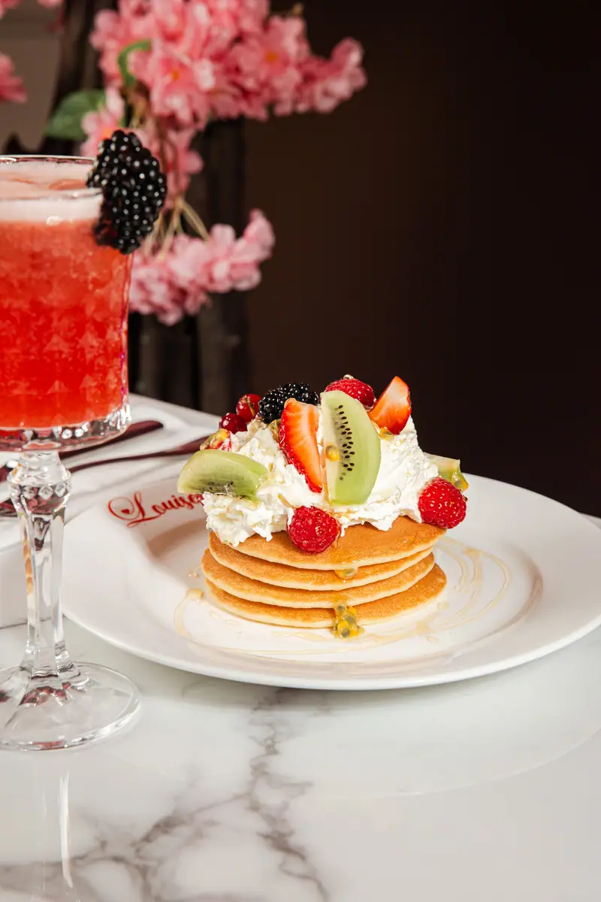
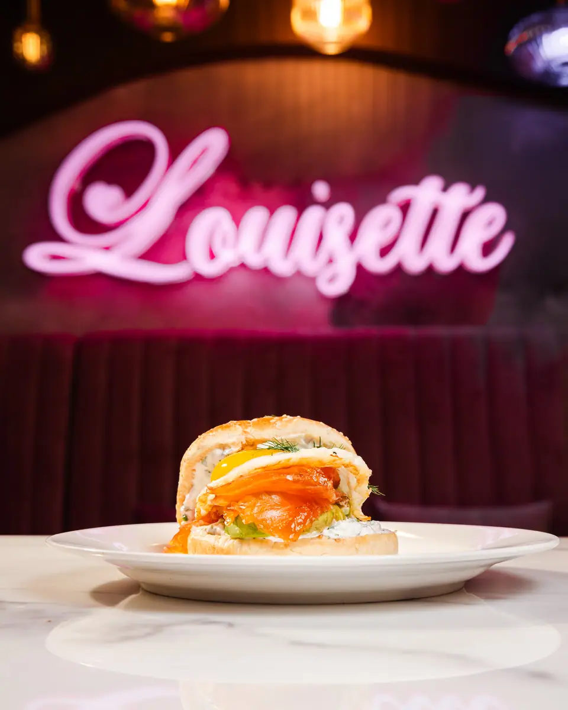
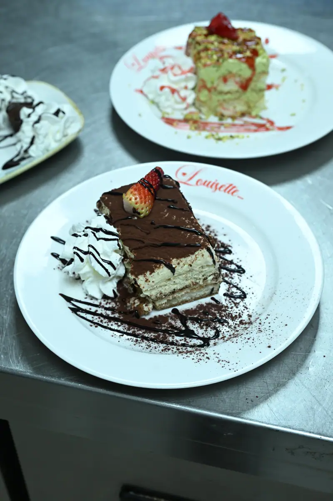

Le matin,
chez Louisette.
La Maison Louisette ouvre à 8 h, 7 j/7, et sert en continu jusqu'à 2 h. Le matin, la carte est celle du café, des jus pressés et des œufs. Les jours, les horaires et la composition exacte d'une formule brunch ne sont pas confirmés à ce jour. Cette page ne les invente pas : elle vous dit ce qui existe, et vous indique où obtenir le reste.
À l’assiette



Ce que l'on sert le matin.
Voici ce qui est servi au premier service. Les intitulés ci-dessous décrivent des plats disponibles le matin, pas une formule assemblée. Ils sont commandés à la carte, comme le reste du service. La disponibilité d'un plat donné se vérifie en salle, auprès de l'équipe.
Le café du matin et les jus pressés ouvrent le service, au comptoir comme en salle.
Les viennoiseries accompagnent le café, seules ou à côté d'une assiette salée.
Les œufs sont travaillés de plusieurs façons. La déclinaison du moment se demande en salle.
Deux options sucrées, servies séparément et non comprises dans un ensemble annoncé.
Une assiette du matin, servie en salle, en mezzanine ou dehors selon la place disponible.
Un plat mijoté aux tomates et aux œufs, à commander seul ou après un café.
Ce que nous ne pouvons pas encore écrire.
Un brunch se juge sur trois éléments : le jour, l'heure et le contenu. Aucun des trois n'est arrêté à ce jour chez nous. Nous ne les publierons pas tant qu'ils ne le seront pas.
- Aucun jour de service n'est annoncé sur cette page. Nous n'en écrirons aucun tant qu'il n'est pas arrêté en interne.
- Aucun horaire de brunch n'est annoncé. Le seul horaire vérifié est celui de la maison : 8 h – 2 h, en service continu.
- Aucune composition de formule n'est annoncée. Le contenu d'une éventuelle offre, son déroulé et ses options ne sont pas figés.
Deux moyens permettent d'obtenir l'information à jour. Le premier est le module de réservation, qui affiche les créneaux réellement ouverts au moment où vous le consultez. Le second est le téléphone : au 01 40 34 20 57, l'équipe répond depuis la salle et connaît le service du matin en cours. Les coordonnées complètes figurent sur la page infos pratiques.
Cette réserve a une raison simple. Une page qui annonce un jour ou un horaire faux produit des clients venus pour rien, puis des avis négatifs que personne ne rattrape. Nous préférons une page plus courte et exacte, quitte à vous faire décrocher le téléphone.
Où vous installer.
Dehors
La terrasse fleurie donne sur le boulevard, à l'ombre d'un arbre en fleurs. Elle dépend de la météo, de la saison et de l'affluence, et ne peut pas être réservée : les conditions sont détaillées sur la page terrasse.
Dedans
La grande salle reçoit les tablées sous le velours rose, le marbre, le laiton et les néons. La mezzanine se tient à l'écart du passage et convient aux petits comités. L'histoire du lieu et son décor sont racontés sur la page la maison.
À plusieurs
Le lieu accueille 250 personnes assises et 400 en format cocktail. Une tablée nombreuse le matin se prépare en amont, comme un dîner de groupe : la marche à suivre est décrite sur la page groupes et privatisation.
Venir le matin.
| Adresse | 8 boulevard Saint-Denis, 75010 Paris |
|---|---|
| Métro | Strasbourg-Saint-Denis, lignes 4, 8 et 9 |
| Horaires | 7 j/7, de 8 h à 2 h, service continu |
| Brunch | Jours, horaires et formule non confirmés à ce jour |
| Cuisine | Française et italienne, du matin jusqu'au soir |
Après le café, la carte poursuit avec la burrata, le poulpe grillé, les carpaccios, les tartares, les poissons du jour, les pâtes, les pizzas napolitaines, les salades et les desserts. Le service ne s'interrompt pas entre les repas. La présentation générale de la maison se trouve sur la page d'accueil.
On vous répond ?
Le module de réservation affiche les créneaux ouverts. Le téléphone donne le détail du service du matin, tel qu'il est au moment de votre appel.